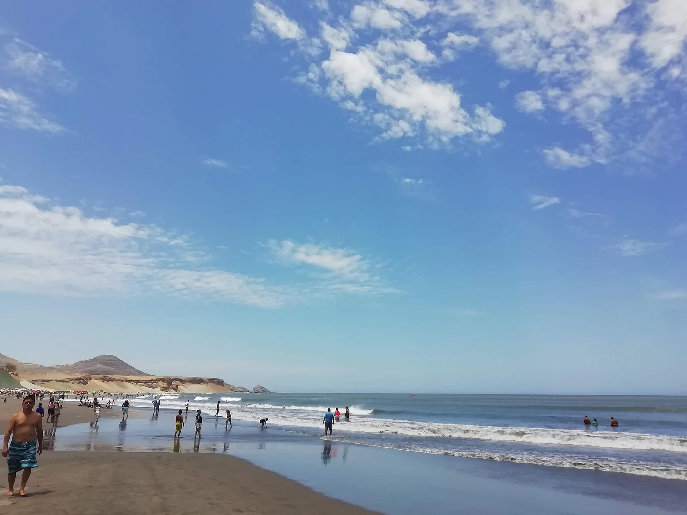

Chicama
Pérou · surf

La gauche la plus longue du monde : on peut y surfer une vague sur plus de 2 km sans s'arrêter.
- Lieu
- Pérou
- Niveau
- Intermédiaire
- Activités
- surf
- Type d'eau
- Mer / océan
- Coordonnées
- -7.70, -79.44 (position approximative du secteur)
Dangers à connaître
- Eau fraîche (Humboldt).
- Vague épuisante.
Le conseil d'Ocean Buddy
Prends un bateau pour remonter : la rame est interminable sinon !
Ouvrir dans Ocean Buddy Télécharger sur l'App Store
Source : Description historique Ocean Buddy · vérification externe en attente.